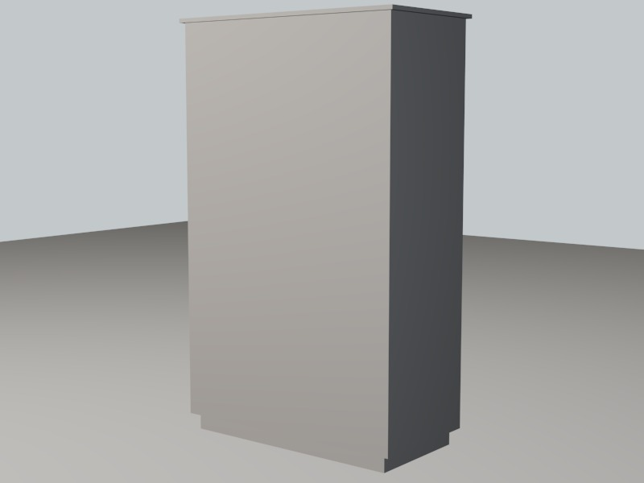
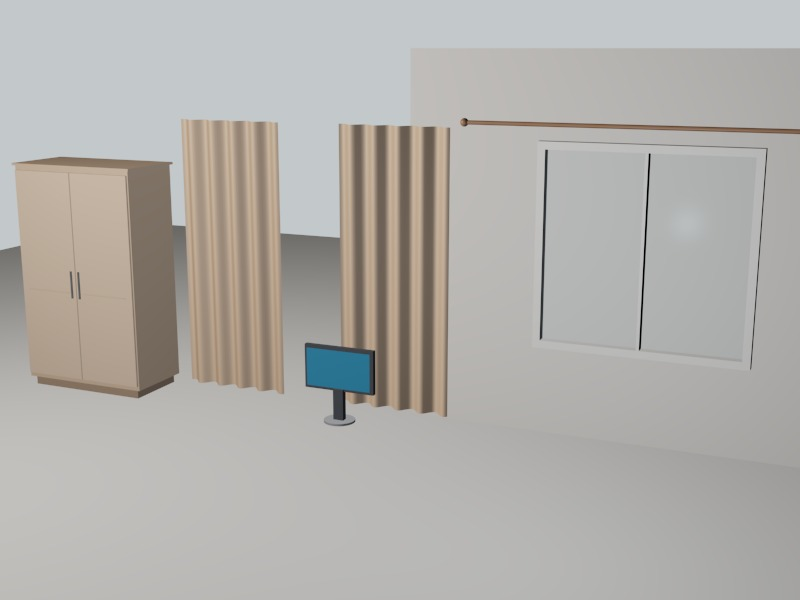

01
查看模型
柜子
Cabinet
- 尺寸
- 120 × 60 × 192
- 部件
- 10
3DS MAX · LIVING ARCHIVE · 2025
目前收录六件日常物件——柜子、沙发、显示器、窗帘、键盘与鼠标。 档案会继续更新：建模、剪辑、平面设计，都会被记录进同一份日志。
01 — SELECTED MODELS
六个 .max 源文件，来自同一组课程练习：柜子、沙发、显示器、窗帘、键盘与鼠标。
点击卡片查看渲染、剪影、尺寸与部件构成。尺寸沿用各源文件的建模单位。
Cabinet
Sofa
Monitor
Curtain
Keyboard
Mouse
注：沙发、键盘、鼠标的源文件未附材质，预览中的织物 / 塑料材质为展示需要重新分配，源文件本身未改动。
03 — MAKING OF
建模不是堆细节，而是不断校准比例与关系。
下面六个阶段，对应 build.ms 与 render_repo.ms 里真实执行的流程。

SETUP
打开源文件，先确认单位、画幅和背景。六个模型的单位并不完全一致，组合或对比前先按尺寸重新校准，避免“看起来差不多”的比例误差。
BLOCKOUT
柜子从 120 × 60 × 192 的柜体开始；沙发先摆底座、三块坐垫与扶手；显示器是圆盘加颈柱；键盘和鼠标则从主网格的轮廓开始。
DETAIL
柜门留 1 厘米中缝，把手与门板线条单独建；沙发用倒角体块做软包；窗帘以正弦波压出 4.2 厘米褶皱；键盘的键帽与底座共用一张可编辑多边形。
MATERIAL
标准材质控制漫反射、光泽度与高光。柜子是四层木色，沙发是暖灰织物配锈红抱枕，显示器是深灰塑料与低饱和蓝屏，键盘和鼠标用石墨色与浅灰塑料。
LIGHTING
暖色主光 0.85、冷色补光 0.30、顶部白光 0.22，全部使用 OmniLight。相机按每件模型的外形单独构图，避免六张图共用同一个呆板视角。
RENDER
每件模型先出 800 × 600 正式渲染，再切纯黑剪影检查轮廓与遮挡，最后保留独立 .max。六件模型统一风格，但保留各自的构图。
CLAY → MATERIAL
以柜子为例 · 3 个阶段

-- 统一尺度与画幅
units.DisplayType = #Metric
units.MetricType = #Centimeters
renderWidth = 800
renderHeight = 600
backgroundColor = color 206 216 228
-- 三点布光：主光 / 补光 / 顶光
KeyLight = OmniLight multiplier:0.85
FillLight = OmniLight multiplier:0.30
TopLight = OmniLight multiplier:0.22
-- 每个场景：渲染 → 存盘 → 剪影校验
render camera:SceneCam outputfile:"preview/all.jpg"
saveMaxFile "all.max" quiet:true
silhouetteRender cam "preview/sil_all.png"
04 — SPATIAL STUDY
从六件模型里取出柜子、显示器与窗帘，共用地面、三点灯光与一台目标摄像机。独立模型解决“像不像”，组合场景解决“在不在一个空间里”。
05 — ABOUT
余家杰 · 学号 25120032013
韶关学院 · 教育科学学院
课程练习作品：以 3ds Max 完成六件日常物件的建模与渲染，记录从体块、材质、布光到渲染校验的完整流程。作品档案会继续更新，后续的剪辑、平面设计与其他软件练习也会并入更新日志。网站使用纯 HTML / CSS / JavaScript 构建，可直接部署于 GitHub Pages。